← 返回阅读库 · 原论文目录
论文讲解阅读文档 · 表征学习 · v190
Improving Transferability of Representations via Augmentation-Aware Self-Supervision
视频时长 00:04:08；讲解文字 1,910 字符；提取讲解画面 17 张。按视频原顺序阅读，每段文字保留时间戳。
文字来自整段视频的自动语音转写，按自然停顿分段，并与 PPT / 论文页面 / 演示画面对齐。未将讲解压缩为摘要；术语、数字和口述公式请结合画面及原论文核对。 阅读稿已校正规范部分明确术语误识别；原始逐字稿和每处修改记录另行保留。
讲解画面为源视频截图（640×360），不是可编辑 PPT 文件。全片按每秒 2 帧扫描内容变化，逐步展开页保留；连续动画保留代表画面。清晰度受源视频限制。
下载完整资料包 · 含离线 HTML、PDF、Word、全部 PPT 画面和字幕。
原论文与材料
Improving Transferability of Representations via Augmentation-Aware Self-Supervision · 下载完整 PDF（18 页）
按时间阅读
00:00:00–00:00:19 · 画面 001
 00:00:00–00:00:19 · 画面 001
00:00:00–00:00:19 · 画面 001大家好今天我们来快速说一篇论文 Improving transferability of representations via augmentation-aware self-supervision 你可以从标题来看到 Transfer learning, representation learning 怎么弄呢我们要知道 augmentation 做了什么继续来看本文的实践这个是经典 self-supervised learning 的这么一个对称的学习的框架通用的一个框架对吧这边你可以看到
00:00:19–00:01:45 · 画面 002
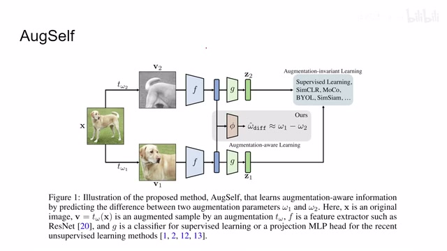
00:00:19–00:01:45 · 画面 002你可以有监督这些方法对吧我们都聊过了那么本文想强调的点呢就是我这个图像进来做了两个不同的这个 data augmentation 他们之间存在的相互的关系是什么如果说我们的 representation 能够保留这种关系那是不是就能够改善我们学到这 representation 的质量你这么想也是啊就是你不仅理解说这个题怎么解你还要理解他出题的这个思路是什么就是为什么我们会产生这个不同的 representation 在我们的 latent space 里面这些不同的 augmentation 之后的这个图像产生的 representation 之间相互有什么关系如果我们能够通过一个方式去学到他的话那也是极好的那这里呢苏尔就使用一个非常简单的方法在训练这个
普通的这些 contrastive learning self-supervised learning 这些东西的时候呢我们呢加上一个 augmentation-aware learning 就是他们提的那干什么呢就是我有一个三层的 MLP 啊把这个 representation 拿进来把这个 representation 拿进来然后呢预测这两个这个 view 他们使用的这个 data augmentation 他们的这个具体的参数他们的差值就是这么简单的思路那么继续我们来看它预测了哪些 Data Augmentation 主要的就是这四种 Random Cropping 对吧一张图你切那它的这个切的中心位置两个自由度切的尺寸两个自由度所以一共是四个自由度你把 View1 和 View2 的这两个参数拿出来做差对吧这个差在跟我们的预测结果做 L2 Distance 这个就是 Random Cropping
00:01:45–00:01:56 · 画面 003
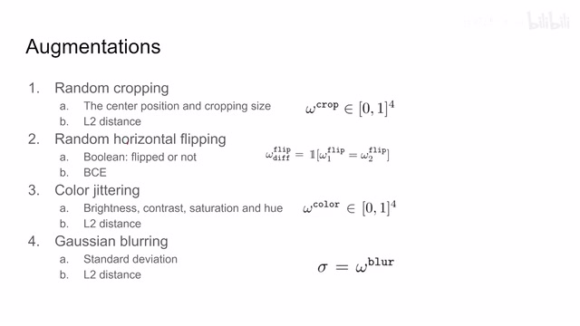
00:01:45–00:01:56 · 画面 00300:01:56–00:01:58 · 画面 004
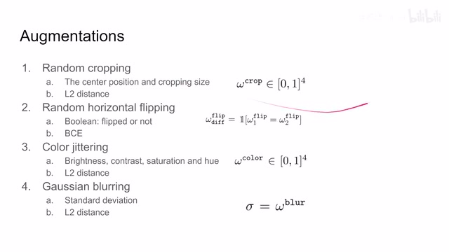
00:01:56–00:01:58 · 画面 00400:01:58–00:02:06 · 画面 005
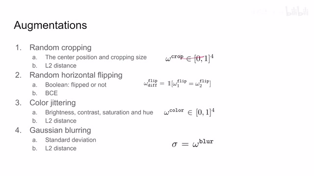
00:01:58–00:02:06 · 画面 00500:02:06–00:02:08 · 画面 006
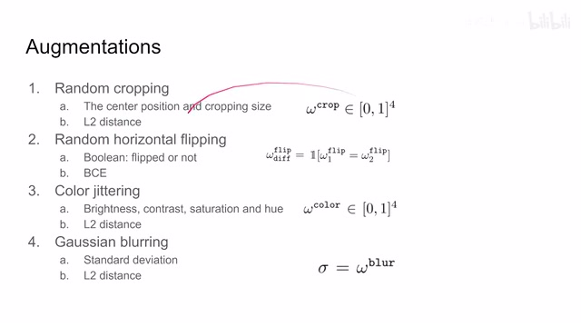
00:02:06–00:02:08 · 画面 00600:02:08–00:02:26 · 画面 007
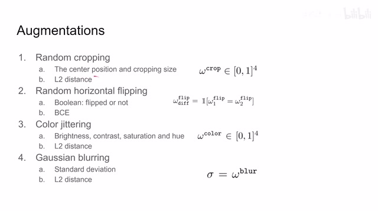
00:02:08–00:02:26 · 画面 007那同理这个 color jittering 和这个 gaussian blurring 这个亮度对比度饱和度和这个色相对吧这个是四个自由度的这个呢是只有一个就是这个 standard deviation 或者说我们的这个 kernel 它的这个大小对吧这些呢都用 L2 distance 因为这个差呢本身就是一个连续的向量啊那么我们预测出来一个连续的值直接做 L2 就可以了那么还有一个呢就是这个水平的翻转
00:02:26–00:02:27 · 画面 008
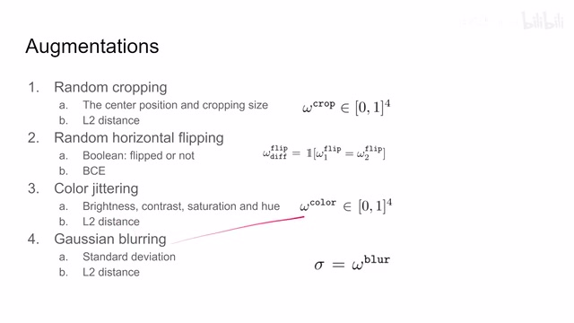
00:02:26–00:02:27 · 画面 00800:02:27–00:02:48 · 画面 009
00:02:27–00:02:48 · 画面 009我们的翻转它无非就是翻了或者没翻所以这里我们就用了一个 classifier 去预测说这两个图像是不是都经历了翻转这成了一个分类问题了所以这里就是用了 BCE 那么这个就是关于 Data Augmentation 的 AuxiliaryTask 就是这里这个地方的这个东西结束了我们来看作者汇报的一些结果比如说这里我们看到它对比了说我们加上这个
00:02:48–00:02:49 · 画面 010
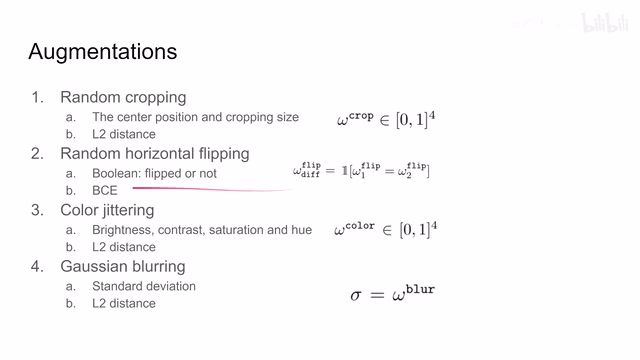
00:02:48–00:02:49 · 画面 01000:02:49–00:02:54 · 画面 011
00:02:49–00:02:54 · 画面 01100:02:54–00:02:58 · 画面 012
00:02:54–00:02:58 · 画面 01200:02:58–00:02:59 · 画面 013
00:02:58–00:02:59 · 画面 01300:02:59–00:03:44 · 画面 014
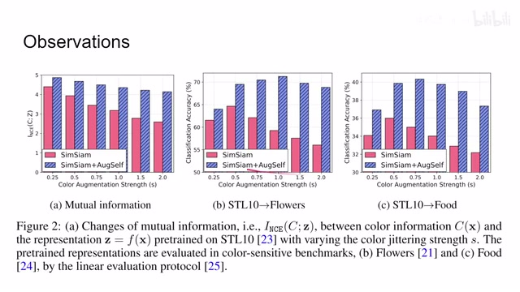
00:02:59–00:03:44 · 画面 014augmentation awareness 之后呢我们的这个 representation 跟这个 color jittering 他们的这个 informatione 你可以理解为它是这个 mutual information 的这个 lower bound 它呢是能够提高的说明我们的这个 representation 确实掌握了一些跟这个 color jittering 就是跟我们的 data augmentation 相关的这么一些信息确实学到了然后这里呢因为本文研究的是这个 transferability 嘛
对吧？所以呢，我们就是看 transfer learning 在这里 pretrain 好了，然后再到不同 dataset 去做这个 linear evaluation。那可以看到了，本文方法加上之后呢，提升呢是显著的。那么更多的结果呢，包括这个 few-shot classification 还有更多的这个 linear evaluation，就是 transfer 的这些过程，本文呢在这个结果中呢都有汇报。总的来说呢，是一个角度比较清奇的这么一个文章。
00:03:44–00:03:48 · 画面 015
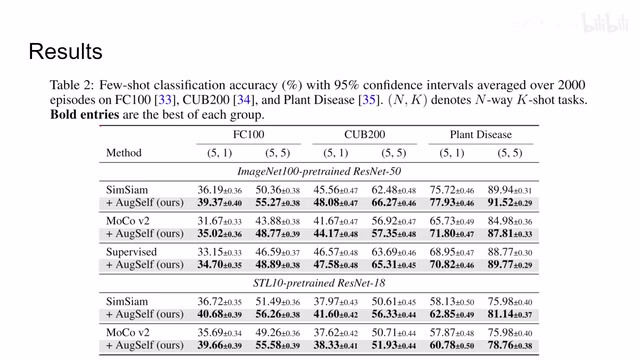
00:03:44–00:03:48 · 画面 01500:03:48–00:04:08 · 画面 016
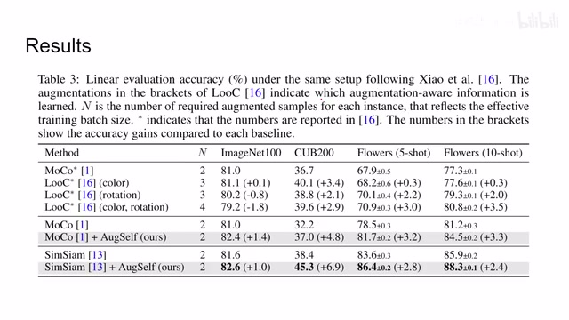
00:03:48–00:04:08 · 画面 016还是非常推荐感兴趣的朋友呢去原文查看它更多的实现的细节，汇报的更多的这个结果结论。那么感谢您的收看，再见。
00:04:08–00:04:08 · 画面 017
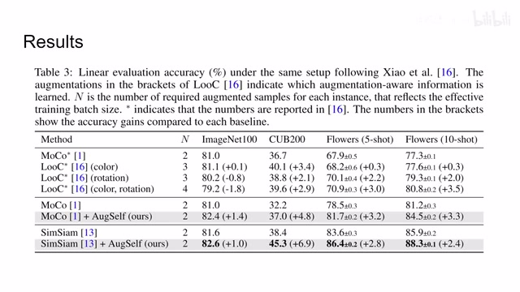
00:04:08–00:04:08 · 画面 017转写与来源说明 · 0 个自动复核提示
保留 10 个原始语音片段，0 个片段触发自动复核提示。提示仅用于定位可能的术语、重复或识别问题，不等于已确认错误。
讲解画面为源视频截图（640×360），不是可编辑 PPT 文件。全片按每秒 2 帧扫描内容变化，逐步展开页保留；连续动画保留代表画面。清晰度受源视频限制。
原视频：paper/合集_2026-10-16_表征学习/[论文速览]AugSelf Improving Transferability...Augmentation-Aware..[2111.09613].mp4
SHA-256：c768b59a38db37be25cc06405c3fa6537ad413a7c18b3902cdc3b2221342f3b9
全文按视频语音与画面制作。原论文可从上方链接下载；完整资料包保留全文、原始逐字稿、字幕和校对记录。